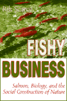

Where does society end and nature begin?
Where does society end and nature begin?


 Where does society end and nature begin?
Where does society end and nature begin?

|  |
Fishy BusinessSalmon, Biology, and the Social Construction of NatureRik Scarcepaper EAN: 978-1-56639-729-2 (ISBN: 1-56639-729-4) |
"Scarce shines a revealing light on the inner workings of hatcheries, providing the reader an appreciation of human compulsions to domesticate and control—forces that have influenced our knowledge, or lack of knowledge, of salmon and other natural entities. ... Thoroughly researched, eloquently written, and energetically told, this book dares us to explore our relation to nature and our knowing of ourselves."
—Pacific Northwest Quarterly
Leaping waterfalls, struggling through rocky shallows, only the strongest salmon survive to spawn a new generation. These remarkable fish seem to be pure nature, unfathomable, all instinct. But are they? For more than a century biologists have tried to unlock the mystery of salmon behavior, and in the process they have made science very much a part of the salmon we know. For sociologist Rik Scarce, salmon represent an opportunity to probe the relationship of science, society, and nature.
About Pacific salmon—a game fish and food source that is protected and managed for economic and environmental abundance—Scarce writes, "What other living thing receives such extensive attention from science and society, is used in so many ways, yet retains so much of what we would like to think is its 'wild' character?" He shows how political, bureaucratic, and economic forces have directed salmon science for their own purposes and how control remains a central feature in salmon biology.
Identifying a countertrend rooted in environmental activism, Scarce also argues that an ecocentric perspective is gaining ground even as pressures mount simultaneously to save endangered salmon populations and to bring every last salmon to market. Thus, while external forces control much of the biologists' work, a movement is underway to free biology from political and economic pressures. In rich, ethnographic detail, Scarce develops this portrait of a science struggling with nature and itself. The old-line "fisheries biologists" tell how they work under immense pressure to unravel the unknowns of salmon existence fulfilling the objectives of politically-motivated funding agencies. In contrast, the new breed of "conservation biology" researchers struggle to maintain the genetic diversity of salmon populations while minimizing the ways humans determine the fate of the salmon.
Fishy Business provides new ways for regarding human interactions with other species, from appealing species like wolves, whales, and redwood trees, to less popular ones such as snail darters and kangaroo rats. Society struggles to decide which parts of nature matter and why. Ultimately, Scarce argues, nature is a social product: What shall we make of it?
Excerpt available at www.temple.edu/tempress
"In this book, [Rik Scarce] describes human uses and abuses of Pacific salmon in an attempt to explore the relationship between science, society and nature. He shows how salmon biology has been manipulated in western North America, originally through scientific curiosity, and then exploited for economic gain, causing ongoing strife between factional and ethnic groups and even between nations. He discusses through many interviews with biologists and fishery managers how political, bureaucratic and economic forces have modified and engineered salmon populations for their own purposes by extensive ranching and enhancement of programs, citing examples of the successes and failures that have resulted."
—Andrew F. Walker, Environmental Conservation
"...Scarce compellingly argues that the emerging field of 'Environmental Sociology' has much to offer. ...Fishy Business is a strong contribution to the growing literature on human/animal relations and Environmental Sociology. Further, in light of the continuing 'Salmon Wars' between Canada and the United States, and other conflicts based upon dwindling 'resources,' Fishy Business is timely and thus well worth a read on that basis alone."
—Canadian Journal of Sociology Online
Read a review from Environmental Ethics, Volume 23, written by Michael Black (pdf).
Acknowledgments
1. Nature in the Making
2. Who—or What—Is in Control Here?
3. Biologists in the Driver's Seat
4. Thinking and Making Salmon
5. Mythology and Biology
6. Freedom as Self-Determination in Salmon Biology
7. Salmon Wars and the "Nature" of Politics
8. Constructing Nature—and Experiencing It
Appendix: Methods and Related Literature
Notes
Index
 | Rik Scarce is Assistant Professor of Sociology at Montana State University and author of the popular and important environmental book Eco-Warriors: Understanding the Radical Environmental Movement. |
Nature and the Environment
Sociology
General Interest
Animals, Culture, and Society, edited by Arnold Arluke and Clinton R. Sanders.
Animals, Culture, and Society, edited by Arnold Arluke and Clinton R. Sanders, is concerned with probing the complex and contradictory human-animal relationship through the publication of accessible books that consider the place of animals in our culture, our literature, our society, and our homes.
© 2015 Temple University. All Rights Reserved. This page: http://www.temple.edu/tempress/titles/1422_reg.html.